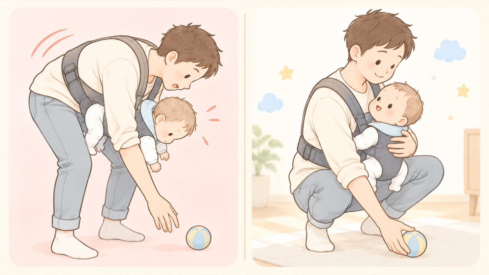

転落を防ぐ
抱っこひもからの転落
乗せ降ろしは低い姿勢で。前かがみのときは手を添えてひざを曲げる
抱っこひもからの転落は、乗せ降ろしのとき、ひもがゆるんでいたとき、抱っこしたまま前かがみになったときに多く起きています。生後4か月以下では入院が必要な重症事故につながるおそれがあるとされ、0歳児では頭蓋骨骨折の事例も報告されています。

- すること：乗せ降ろしは、椅子に座るなど低い姿勢で
立ったまま出し入れしないだけで、転落時の高さが大きく変わります。 - すること：毎回、ひものゆるみと留め具を確認する
服の厚みや使う人の体格で適正な長さは変わります。短時間の使用でも確認します。 - すること：物を拾うときは、子どもを手で支えてひざを曲げる
腰から前に折るのではなく、腰を落とします。 - しないこと：取扱説明書を読まずに使わない
対象月齢・体重の下限と、正しい装着手順が書かれています。 - しないこと：使う人が変わったときに、調整せず使い回さない
親と祖父母で体格が違えば、ひもの長さも変わります。 - しないこと：抱っこ・おんぶのまま自転車に乗らない
転倒したときに赤ちゃんが放り出されます。生後5か月の赤ちゃんが、おんぶされた状態から転倒時に放出され、重症頭部外傷を負った事例があります。幼児用座席の対象年齢は、製品の取扱説明書で確認してください。
🛍 グッズの選び方
PR- 新生児から使うなら、そのまま新生児に使えるものか、体を底上げする新生児用のクッションが付いてくるものを選びます。頭と首を支える部分が要ります。
- 脚がM字に開く構造を選びます。SGマーク製品安全協会が定めた安全基準に適合した製品に付く任意のマーク。対象製品の賠償制度もある。（子守帯のSG基準）がある製品は、バックルやベルトの強度が試験されています。
- 装着に不安があるうちは、バックルが前で留められるものだと、背中で手探りしなくて済みます。
- エルゴベビー OMNI Deluxe Mesh🏅 マザーズセレクション大賞2025（Ergobaby OMNIシリーズ）Amazonで見る →（新しいタブで開きます）
- ベビービョルン 抱っこひも HARMONY（0か月〜）0か月から。対面抱きで顔が見えるAmazonで見る →（新しいタブで開きます）
- コニー抱っこ紐 FLEX（首を支える当て入り）軽い。首を支える当てが入っているAmazonで見る →（新しいタブで開きます）
- ベビービョルン ベビーキャリアMINI Air（新生児〜12か月目安）新生児期に特化。装着が少ない手順で済むAmazonで見る →（新しいタブで開きます）
- エルゴベビー ADAPT SoftFlex（新生児から・専用クッション不要）新生児用のクッションを足さずに、そのまま使えるAmazonで見る →（新しいタブで開きます）
- Liscia ベビーカー サンシェード（メッシュ・虫よけ兼用）メッシュ。日よけと虫よけを兼ねるAmazonで見る →（新しいタブで開きます）
リンクはAmazonアソシエイトリンクです。当サイトはアフィリエイトプログラムに参加しています。Amazonのアソシエイトとして、当サイトは適格販売により収入を得ています。 選び方の方針
この項目の根拠
- Injury Alert No.71 自転車運転中の保護者に背負われた状態から転倒時に放出され重症頭部外傷を負った乳児（日本小児科学会・PDF）（新しいタブで開きます）
自転車運転中の保護者に背負われた生後5か月の乳児が、転倒時に放出されて重症頭部外傷を負った事例。 - 抱っこひもからの転落に注意！（東京都 生活文化局・PDF）（新しいタブで開きます）
転落が起きやすい場面、4か月以下で重症化のおそれ、乗せ降ろしは低い姿勢で、前かがみのときは手で支えひざを曲げる。